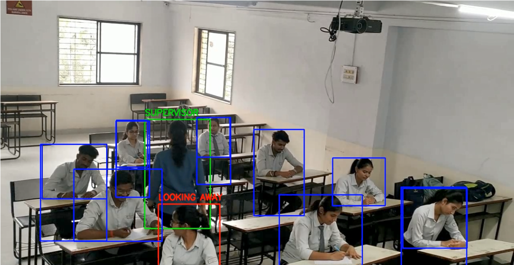
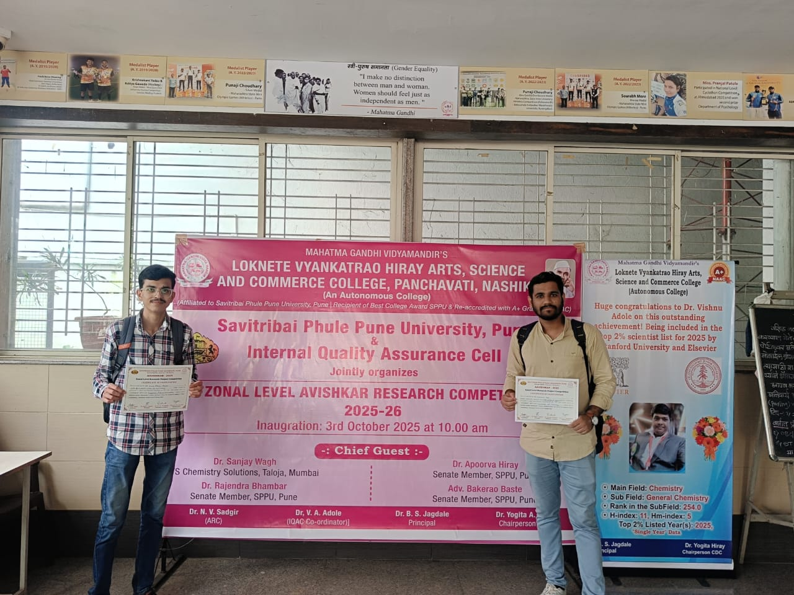
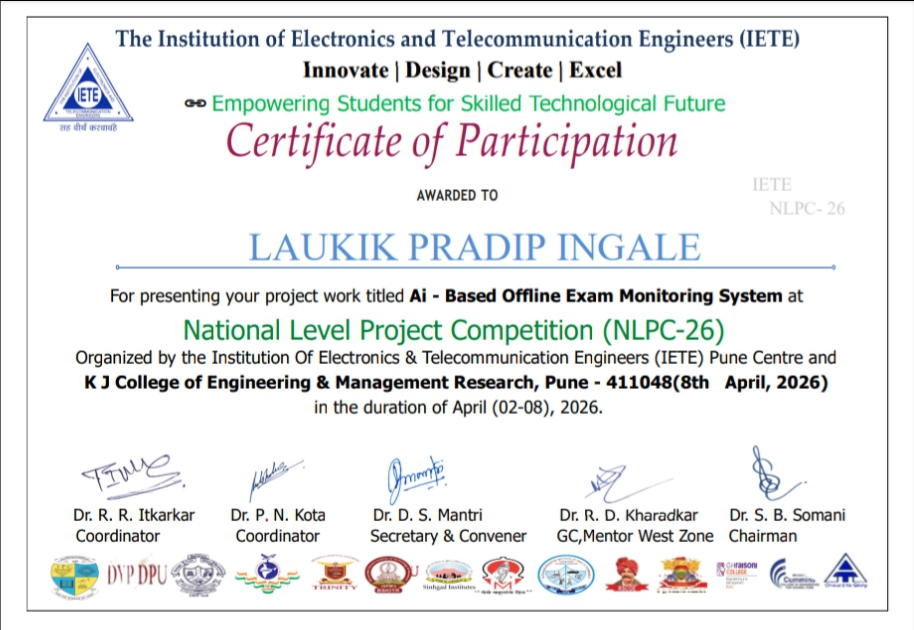

Seeing What Invigilators Can't — Intelligently, Instantly, Accurately.
A real-time computer vision system that monitors exam halls, detects malpractice behaviors, and generates instant alerts — powered by YOLOv8, DeepSORT, and MediaPipe.

Academic integrity is the cornerstone of a fair education system. Traditional exam supervision relies entirely on human invigilators, who are limited by attention span, physical reach, and subjectivity. With large exam halls holding hundreds of students simultaneously, human-only monitoring creates significant blind spots.
The AI-Based Offline Exam Monitoring System is a final-year engineering project designed to augment — and eventually automate — the exam supervision process using state-of-the-art artificial intelligence. The system uses standard CCTV cameras already installed in most institutions and processes their feed in real time.
This project is uniquely tailored for offline (physical) examination halls, distinguishing it from online proctoring solutions. It provides alerts, annotated video, JSON logs, and CSV reports — making evidence collection seamless for authorities.
Processes live CCTV video streams to detect and classify behaviors in real time.
Sends immediate on-screen alerts when suspicious behavior is detected.
Generates JSON logs and CSV reports for documentation and review.
Despite decades of technological advancement, most Indian universities and examination boards still rely on manual invigilation — a method that is fundamentally flawed for large-scale deployments. The result is rampant malpractice, institutional distrust, and unfair outcomes for honest students.
"A single invigilator monitors 30–60 students simultaneously, making consistent, objective surveillance physically impossible."
Invigilators cannot maintain constant vigilance for 2–3 hours across large halls, creating monitoring gaps that students exploit.
Without recordings or logs, disputes about cheating incidents are unresolvable, making disciplinary action difficult.
Students use smartphones, Bluetooth earpieces, and micro-chits — sophisticated methods hard to detect without technological assistance.
While online proctoring tools exist, no robust AI system is designed specifically for physical offline examination halls.
Develop a system capable of detecting suspicious behaviors in real time from CCTV video streams without significant latency.
Identify and classify at least 5 malpractice behaviors: gaze deviation (left/right), note passing, whispering, and electronic device usage.
Track individual students across frames using persistent IDs via DeepSORT, ensuring consistent monitoring of each examinee.
Generate real-time visual alerts on the monitoring dashboard when a suspicious event is detected, enabling rapid invigilator response.
Produce annotated video recordings, JSON event logs, and CSV summary reports for post-exam review and disciplinary proceedings.
Design the system to integrate with existing CCTV infrastructure, requiring minimal hardware investment from educational institutions.
Our solution combines three cutting-edge AI frameworks into a unified pipeline that monitors, tracks, and reports exam hall behavior with minimal hardware overhead.
Object Detection
Detects people, chits, and other objects in real time. Ultra-fast inference makes it ideal for live video streams.
Multi-Object Tracking
Assigns and maintains unique IDs for each student across frames, enabling continuous behavioral monitoring per individual.
Pose & Gaze Estimation
Extracts facial landmarks and body keypoints to determine head orientation (gaze direction) and body pose for behavior classification.
MediaPipe estimates the student's head pose. If the gaze angle exceeds a threshold away from the paper, an alert is triggered.
YOLOv8 detects paper objects outside the normal exam area and proximity between students' hands triggers a flag.
Interaction between students is detected using AI by analyzing proximity, gestures, and behavior.
DeepSORT tracks movement trajectories; unusual displacement or standing behavior is flagged for invigilator attention.
The system operates as a sequential AI pipeline. Each frame from the CCTV feed passes through multiple stages of analysis before generating an output.
Live CCTV stream or recorded video is ingested frame-by-frame using OpenCV at target FPS.
Each frame is passed through YOLOv8 to detect persons, chits, and other relevant objects with bounding boxes.
Detected person bounding boxes are passed to DeepSORT, which assigns persistent IDs and tracks each student's trajectory.
For each tracked student, MediaPipe extracts facial landmarks and body pose keypoints to estimate gaze direction and body orientation.
A rule-based + ML classifier combines signals from detection, tracking, and pose modules to label behaviors as Normal or Suspicious.
Alerts are displayed on the monitoring dashboard. Events are logged to JSON and CSV files with timestamps, student IDs, and behavior type.
The system was tested across multiple recorded exam scenarios with manually annotated ground truth. Below are the performance metrics achieved.
The system achieves 80–90% accuracy across all tested behaviors, demonstrating strong real-world applicability. Gaze estimation using MediaPipe proved to be the most reliable signal (90% accuracy), while Supervisor detection — which relies on indirect colour cues — was the most challenging (80%). Processing at ~25 FPS on mid-range hardware (NVIDIA GTX 1660), the system runs smoothly in real-time.
Precision and recall were balanced using confidence thresholds tuned on validation data. False positive rates were kept below 12% to avoid unnecessarily alarming invigilators, while recall was prioritized for high-severity behaviors like device usage.
Figure 1: Live system output showing annotated exam hall feed with bounding boxes, student IDs, and behavior labels.
Successfully achieved real-time monitoring at 25 frames per second on consumer-grade GPU hardware, proving practical deployability.
Unified three independent AI frameworks (YOLOv8, DeepSORT, MediaPipe) into a single cohesive pipeline — a technically significant engineering feat.
Consistent detection accuracy across diverse testing conditions including varying lighting, camera angles, and exam hall configurations.
Auto-generated JSON logs and CSV reports with timestamps, student IDs, and behavior annotations for post-exam review.
Designed to integrate with standard CCTV infrastructure already present in most institutions, requiring zero new camera hardware.

Selected for zonal level for presenting AI-based exam monitoring system.

Secured 3rd rank in Round 1 of National Level Project Competition.
Replace rule-based classifiers with trained LSTM/Transformer models for more nuanced and context-aware behavior understanding.
Integrate face recognition to automate student identity verification at the start of each exam session, eliminating proxy attendance.
Build a web-based monitoring dashboard accessible remotely by exam authorities, enabling oversight from outside the hall.
Add microphone-based ambient sound analysis to directly detect whispering and unauthorized verbal communication.
Develop a companion mobile application that sends push notifications to invigilators' phones with flagged incidents and snapshots.
Establish a comprehensive data governance and student privacy framework, including CCTV consent and data retention policies.
Semester and annual examinations in engineering, medical, law, and other professional courses.
UPSC, JEE, NEET, GATE, and other high-stakes national competitive exams where integrity is critical.
HR departments conducting skill tests and certification exams for employee recruitment or promotion.
Mock test centers that simulate real exam environments and require fair assessment of student performance.
Medical board exams, bar exams, and other licensing examinations where credential integrity is non-negotiable.
SSC, Banking, Railway, and other government recruitment exams conducted at scale across multiple centers.
Specialized in deep learning pipeline integration, YOLOv8 model training, and system architecture design.
Focused on DeepSORT tracker integration, multi-object tracking pipeline, and real-time video processing optimization.
Project Guide: Mrs. H. H. Kulkarni · Department of Electronics and Telecommunication Engineering · GES's R. H. Sapat College of Engineering, Management Studies And Research, Nashik · 2025–26
Interested in our project, collaboration, or have questions? Reach out to us!
laukik.ingalee@gmail.com
GES's R. H. Sapat College of Engineering, Management Studies And Research, Nashik, India